Sesión 1 — Confianza y verificación · Taller para docentes
Facultad de Ciencias Sociales, PUCP · con apoyo de Q-LAB
| Hora | Bloque | Tema |
|---|---|---|
| 6:00 – 6:20 | 1 | Qué es Claude y sus tres productos |
| 6:20 – 6:50 | 2 | VS Code y el terminal, paso a paso |
| 6:50 – 7:10 | 3 | Configuración: modelo, effort, modos |
| 7:10 – 7:20 | ☕ | Pausa 1 |
| 7:20 – 7:45 | 4 | Lo primero: /init y markdown |
| 7:45 – 8:05 | 5 | Trabajar: conversar y ordenar |
| 8:05 – 8:15 | ☕ | Pausa 2 |
| 8:15 – 8:55 | 6 | ⭐ Literatura: buscar, verificar y descargar |
| 8:55 – 9:00 | 7 | Cierre y tarea |
Los asistentes del Q-LAB están en la sala: levanten la mano ante cualquier problema técnico y ellos los ayudan sin detener la clase.
Un agente que vive en su computadora, ve sus archivos y puede trabajar sobre ellos por usted.
No es un chat al que le pegan texto. La diferencia práctica:
| En el chat de siempre | Con Claude Code |
|---|---|
| “Resúmeme este paper” (y usted pega el texto) | “Lee los 40 PDF de esta carpeta, dime cuáles usan datos de panel y arma una tabla” |
| Usted copia la respuesta a Word | Él crea y edita los archivos directamente |
En su semana de investigación y docencia, Claude Code puede:
Nada de eso requiere saber programar
Sí requiere saber qué pedirle y cómo verificarlo — de eso trata este taller.
Antes de instalar nada, ubíquense: Claude son tres cosas distintas y es fácil confundirlas. Veámoslas una por una.
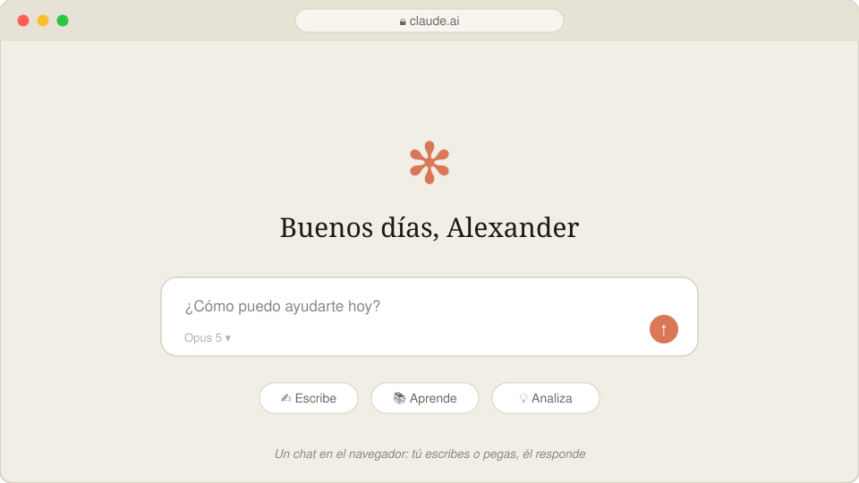
Como ChatGPT: ustedes pegan texto y él responde. Excelente tutor de conceptos — pero no ve sus archivos.
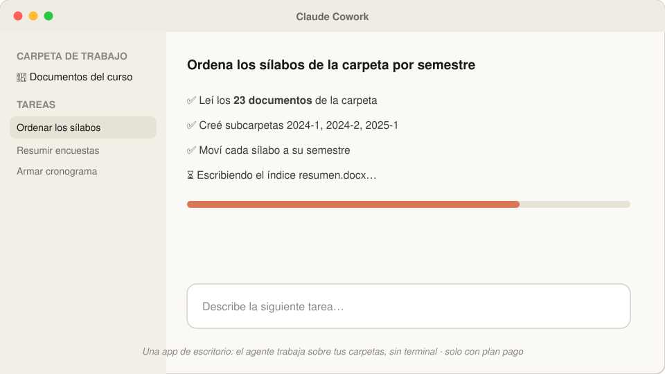
El agente trabaja sobre una carpeta, sin terminal. Ideal para tareas de documentos — pero requiere plan pago ($20/mes o más).
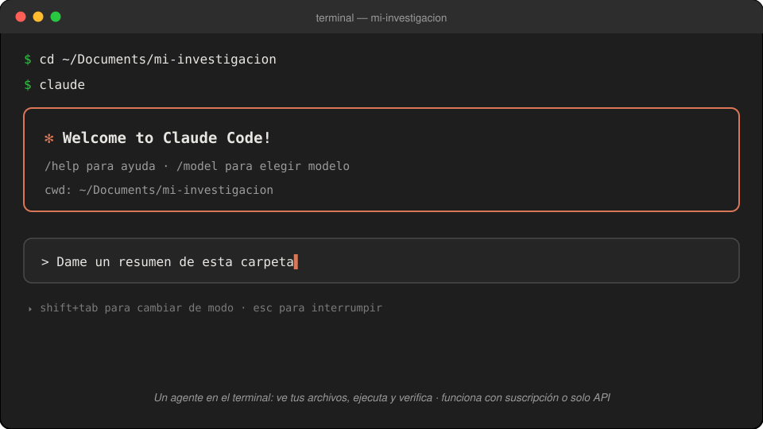
El mismo agente, en el terminal: ve sus archivos, ejecuta, verifica. Funciona con suscripción o solo con una clave API (paga por uso).
| Producto | ¿Para quién? | Acceso |
|---|---|---|
| claude.ai (el chat) | Preguntas, borradores, explicaciones | Gratis con límites · Pro $20/mes |
| Claude Cowork | Trabajo sobre documentos sin terminal | ❌ Solo con plan pago ($20/mes o más) |
| Claude Code | Investigación: datos, PDFs, LaTeX | ✅ Suscripción o solo una clave API (paga por uso) |
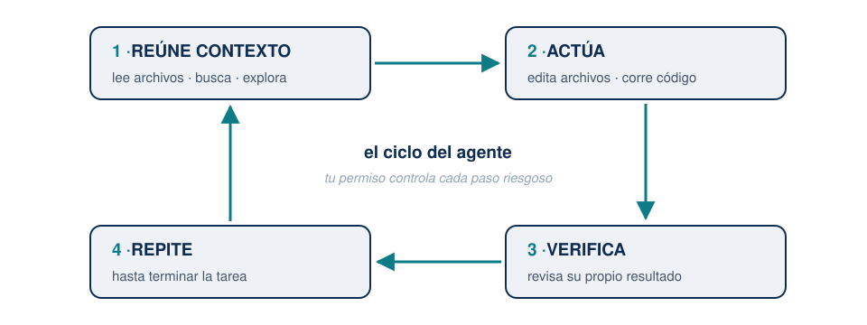
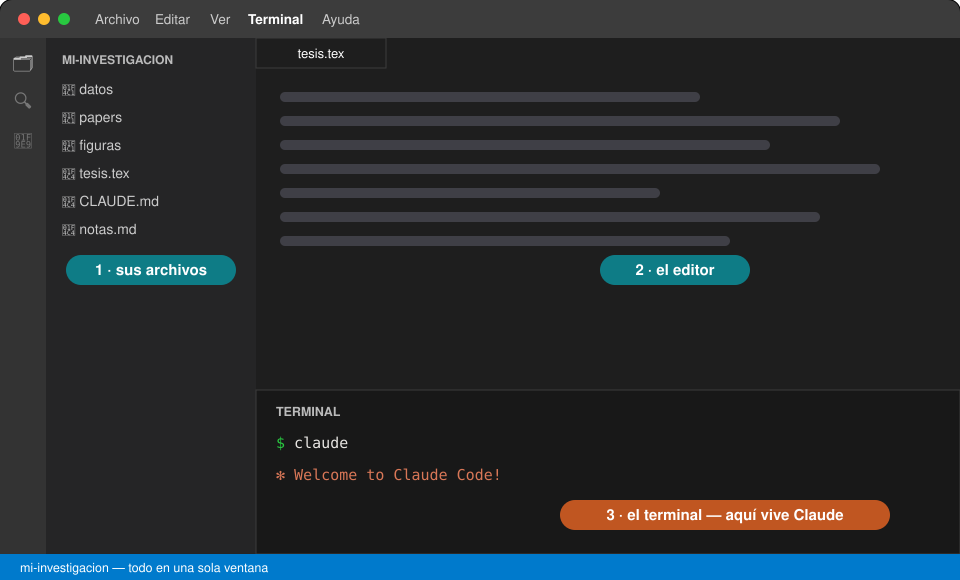
Todo en una sola ventana: sus archivos a la izquierda, el documento al centro, y abajo el terminal donde vive Claude. Además es gratis, funciona igual en Windows y Mac, y abre PDFs, datos y texto sin cambiar de programa.
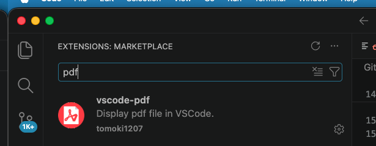
Para leer PDFs dentro de VS Code (sus papers, y el PDF que compile LaTeX):
pdfSin esto, cada PDF se abre en otro programa y pierden la gracia de “todo en una sola ventana”.
Para el taller les enviaremos la carpeta del proyecto lista para descargar.
Con eso VS Code ya “ve” su proyecto: desde ese panel saldrá la ruta que le daremos al terminal en el siguiente paso.
Este mismo camino sirve después para cualquier carpeta suya: tesis, cursos, papers.
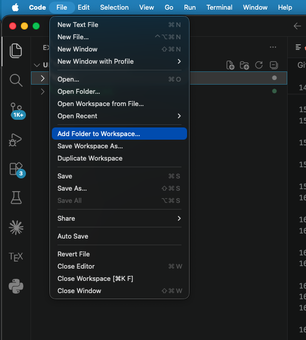
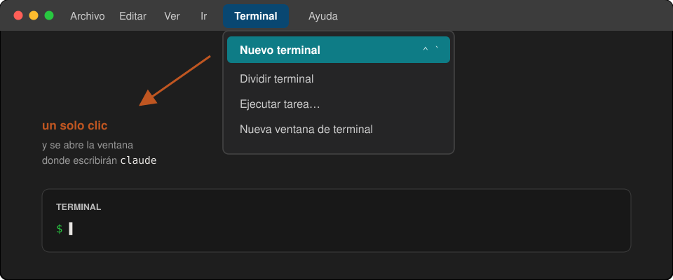
Menú Terminal → Nuevo terminal. Tip: si la ventanita de abajo les parece chica, repitan el menú y elijan Nueva ventana de terminal para tenerla grande y aparte.
Una ventana donde uno escribe instrucciones en texto en lugar de hacer clics.
La buena noticia de 2026:
cd (change directory = “cámbiate a esta carpeta”).¿Por qué uno solo? Porque lo único que ustedes hacen a mano es decirle en qué carpeta trabajar. Todo lo demás se pide conversando.
cd, un espacio, peguen la ruta, Enter.claude, Enter.cd /Users/su-nombre/Documents/mi-investigacion
claudeEse es TODO el “código” que este taller les va a pedir escribir.
Todos nos atascamos. Esto resuelve el 95 % de los líos:
| Problema | Solución |
|---|---|
| Claude está haciendo algo que no quiero | Esc — lo interrumpe sin romper nada |
| Quiero salir de Claude | Ctrl+C dos veces |
| Me metí a la carpeta equivocada | Salgan (Ctrl+C ×2), cd con la ruta correcta, claude de nuevo |
| Cerré todo, ¿perdí mi conversación? | No: claude --resume muestra sus conversaciones anteriores |
| Nada responde y no sé qué pasa | Cierren la ventana del terminal, abran una nueva y retomen |
Tip
Y la herramienta universal: tómenle captura de pantalla al problema, péguenla en Claude (Ctrl+V / Cmd+V en el chat del terminal) y pregunten “¿por qué me sale esto?”. Claude se depura a sí mismo sorprendentemente bien.
En el Bloque 1 eligieron el producto: Claude Code. Lo primero que van a configurar es el modelo — y es fácil confundirlos:
| El producto | El modelo | |
|---|---|---|
| Qué es | La puerta de entrada — dónde usan Claude | El cerebro que razona — quién les responde |
| Los nombres | claude.ai · Cowork · Claude Code | Opus · Fable · Sonnet · Haiku |
| La analogía | el vehículo | el motor |
Un mismo producto puede montar distintos motores — por eso dentro de Claude Code existe el menú /model para cambiar de cerebro.
Así que no, “¿Opus es lo mismo que Claude Code?” — Claude Code es desde dónde trabajan; Opus es quién piensa.
Dentro de Claude, escriban /model y elijan Opus.
| Modelo | ¿Cuándo? |
|---|---|
| Opus | ✅ Todo el trabajo del día a día: datos, tablas, LaTeX, organización |
| Fable | Solo redacción fina de un paper — es caro y el límite se agota en horas |
| Sonnet, Haiku | No los necesitan por ahora |
Si un día algo responde “raro”, lo primero que deben revisar es /model: ¿qué modelo quedó seleccionado?
/model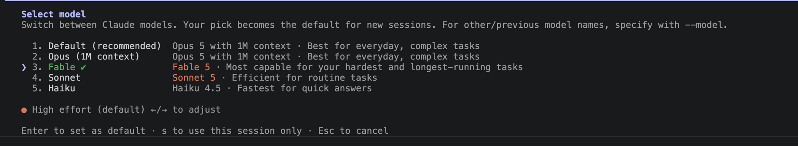
El effort es cuánto razona el modelo antes de responder — como la diferencia entre pedirle a un asistente una respuesta al vuelo o un análisis cuidadoso.
| Menos effort | Más effort | |
|---|---|---|
| Velocidad | responde más rápido | piensa más tiempo |
| Profundidad | suficiente para tareas simples | mejor en problemas difíciles |
| Consumo | gasta menos | gasta más tokens |
/model, con las flechas ←/→ — la línea naranja va cambiando: low · medium · high · xHigh…Con Shift+Tab se cambia de modo — son cuatro, y se ven en la barra de abajo de Claude:
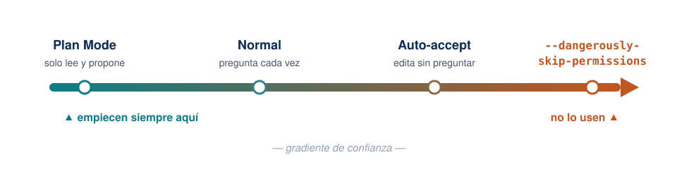
Existe una bandera que desactiva todas las protecciones (--dangerously-skip-permissions) — no la usen.
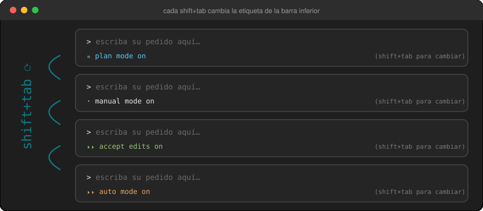
Presionen Shift+Tab varias veces ahora mismo y miren cómo rota la etiqueta. Déjenlo en auto mode on: así los ejercicios que siguen corren de corrido, sin detenerse en cada permiso.
Lo dejamos listo ahora para no perder tiempo después. En el navegador, abran esta dirección tal cual (es JSTOR a través del proxy):
https://pucp.elogim.com/auth-meta/login.php?url=https://www.jstor.orgLes pedirá usuario y contraseña del campus virtual — los mismos de PAIDEIA/Intranet. Y listo: dejen esa pestaña abierta el resto de la clase. El navegador quedó reconocido como PUCP.
Para otra revista, cambian solo lo que va después de url=:
https://pucp.elogim.com/auth-meta/login.php?url=<dirección de la revista>Importante
No se registran en JSTOR, ni en Wiley, ni en ninguna. Su cuenta personal de JSTOR no sirve — con ella solo pueden leer en pantalla. El botón de descarga aparece únicamente bajo la sesión de la Universidad.
Con todo ya configurado, pídanle literalmente esto:
Revisa mi entorno: dime qué versión tengo de Python y de LaTeX,
qué me falta instalar para trabajar con datos, PDFs y documentos
en este taller, y cómo instalarlo.Qué observar: el agente ejecuta comandos y les muestra qué hace. No les contesta de memoria: está mirando su máquina.
Nota
Este ejercicio es a la vez el diagnóstico: si algo falta, el propio agente les dice cómo instalarlo — y puede instalarlo por ustedes. Es la primera lección de actitud: cuando tengan una duda técnica, pregúntenle a Claude.
La mayoría no sabe qué máquina tiene — y a veces tiene más poder del que cree. Pregúntenle:
¿Qué computadora tengo? Dime mi procesador (CPU), si tengo GPU o
aceleración para inteligencia artificial, y cuánta memoria RAM.
Con esas características, ¿qué herramientas de IA podría correr
localmente? Por ejemplo, ¿podría transcribir audio de mis clases
con Whisper, y qué tan rápido?Qué observar: la respuesta es distinta para cada persona — Claude mira su hardware real y adapta la recomendación.
Tip
Guarden esa respuesta: en la Sesión 2 vamos a transcribir una clase grabada con Whisper, y la velocidad dependerá exactamente de esto (con GPU o chip moderno: minutos; solo CPU: más lento, pero funciona igual).
Volvemos 7:20 pm
/initPodrían empezar a conversar de inmediato… pero Claude no sabe nada de su proyecto: qué contiene, cómo se organiza, qué reglas tiene.
Por eso el primer comando de todo proyecto nuevo es:
/initClaude explora toda la carpeta — lee sus documentos, sus datos, sus PDFs — y redacta un archivo llamado CLAUDE.md con lo que encontró: de qué trata el proyecto, cómo está organizado, qué convenciones sigue.
Ese archivo se vuelve la memoria del proyecto: Claude lo lee automáticamente cada vez que inicien sesión ahí. Nunca más tendrán que volver a explicar de qué va su investigación.
.md)?Es texto simple con marcas de formato — se abre con cualquier editor, pesa nada, y se lee igual dentro de 20 años.
| Lo que escriben | Lo que significa |
|---|---|
# Título |
encabezado |
## Subtítulo |
encabezado menor |
- punto |
viñeta |
**palabra** |
negrita |
`código` |
resaltar un comando o ruta |
Por qué importa para ustedes: es el formato en el que Claude guarda todo lo que quiere recordar — la memoria del proyecto, las notas de una reunión, un resumen de literatura. A diferencia de Word, es legible tanto por ustedes como por la máquina, y se puede versionar y comparar.
.md abierto en VS Code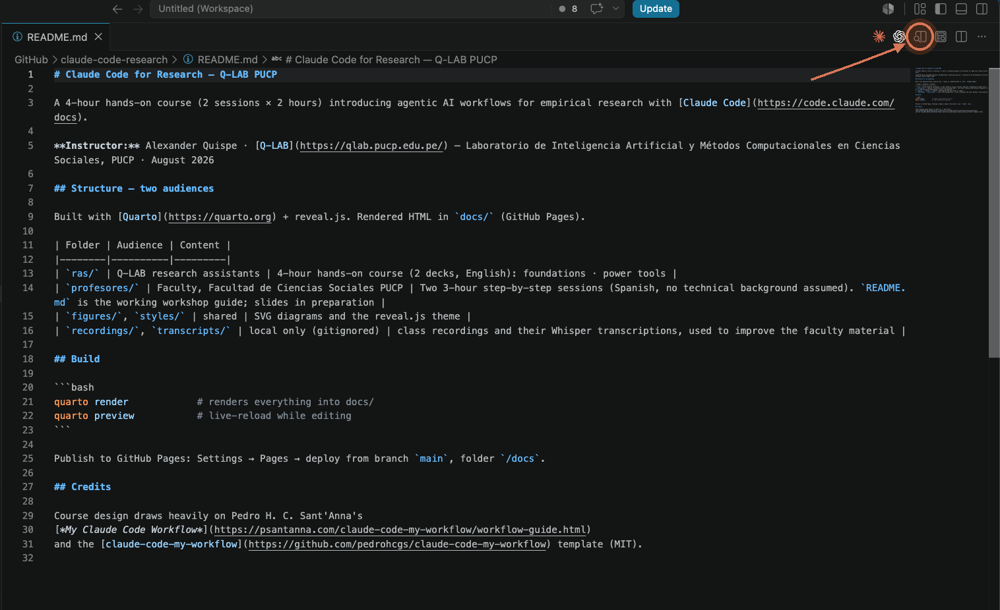
Así se ve por dentro: los #, ** y | a la vista. ▸ Clic en el icono de la lupa (arriba a la derecha) y VS Code lo lee por ustedes.
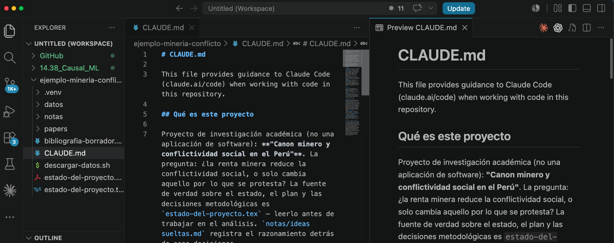
El mismo archivo, dos vistas: a la izquierda las marcas, a la derecha el documento formateado. Por eso markdown funciona tan bien con un agente — él lo escribe, ustedes lo leen cómodo.
/init en su proyecto/initDéjenlo trabajar (puede tomar un par de minutos: está leyendo todo).
Cuando termine, ábranlo y léanlo: CLAUDE.md aparece en el panel izquierdo de VS Code.
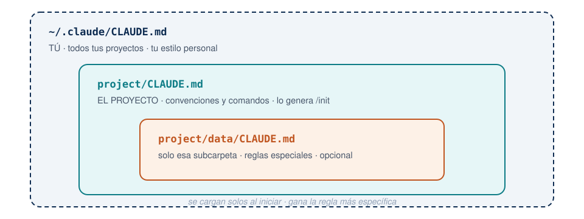
Ninguno existe por defecto: el del proyecto lo genera /init; el personal lo crean ustedes (o el atajo #); el de subcarpeta es opcional.
Ya dentro de su carpeta real, prueben estas preguntas — ninguna modifica nada, solo leen:
Dame un resumen de esta carpeta: ¿qué archivos hay y de qué trata?¿Qué archivos parecen versiones duplicadas o viejas?Explícale la estructura de esta carpeta a un nuevo asistente
de investigación.Qué observar: responde sobre sus archivos reales, citando nombres y contenidos. Eso es lo que un chat de la web no puede hacer.
De aquí en adelante trabajamos sobre una carpeta que les entregamos: ejemplo-mineria-conflicto/. Es un proyecto de investigación real, a medio empezar y deliberadamente desordenado.
La pregunta: en los departamentos mineros del Perú, ¿la renta minera reduce la conflictividad social — o solo cambia aquello por lo que se protesta?
| Carpeta | Qué hay |
|---|---|
datos/ |
10 reportes de conflictos de la Defensoría · producción y empleo minero · mesas de diálogo · 251 proyectos de ley |
papers/ |
8 PDFs con nombres imposibles |
notas/ |
Apuntes sueltos del investigador |
Úsenla hoy y quédensela. Si prefieren, todos los ejercicios funcionan igual sobre una carpeta suya.
Empecemos por saber qué es cada archivo. Miren papers/: hay cosas como descarga.pdf, el pasado importa - copia (2).pdf, articulo minería (1).pdf.
En la carpeta papers/ hay PDFs de artículos. Ábrelos y renómbralos con
el formato apellido-año-palabraclave.pdf. ANTES de renombrar nada,
muéstrame la lista de cambios que vas a hacer.Qué observar:
Ya saben qué es cada cosa. Ahora dónde va:
Quiero dejar este proyecto ordenado como un paquete de replicación
listo para enviar a una revista: carpetas claras (datos, código,
resultados, documento) y un README que explique cómo reproducir todo.
Propónme primero el plan — qué mueves y por qué. No cambies nada
todavía.Qué observar: llega un plan concreto sobre sus archivos reales. Léanlo, cambien lo que no les guste, y recién entonces autoricen.
Cuando terminen, pídanle que actualice el CLAUDE.md con la nueva estructura — así la memoria del proyecto queda al día.
Volvemos 8:15 pm
/deep-research tarda 15–20 minutos — lo echamos a andar ahora y seguimos la clase mientras trabaja. Copien este prompt completo:
/deep-research ¿Qué dice la evidencia empírica desde 2015 sobre la
relación entre actividad minera y conflictividad social en el Perú?
Prioriza estudios cuantitativos, revisiones sistemáticas e informes
oficiales.
Además del informe, hazme estas tres cosas:
1. Descarga a la carpeta papers/ todos los documentos de acceso
abierto que cites (working papers, preprints, informes, tesis),
nombrados apellido-año-tema.pdf y agrupados por subtema.
2. Crea un archivo pendientes.md con las fuentes relevantes que NO
pudiste descargar — artículos en revistas por suscripción, libros
y capítulos de libro. Para cada una incluye: cita completa en APA,
DOI o ISBN, enlace al editor, y el motivo (suscripción, libro
impreso, sin versión abierta disponible).
3. En el informe cita esas fuentes igual que las demás, pero
márcalas como [pendiente de descarga].Corre en segundo plano: la sesión les queda libre. Mírenlo con /workflows.
Porque en Ciencias Sociales lo que queda fuera suele ser lo más citado: el libro clásico de la disciplina, el artículo en una revista indexada de suscripción.
Si solo pidieran “descarga lo que encuentres”, esas fuentes desaparecerían silenciosamente de su revisión — y una revisión de literatura con un hueco invisible es peor que una corta.
Con este prompt obtienen dos productos:
| Archivo | Qué contiene | Para qué |
|---|---|---|
papers/ |
Los PDFs que sí consiguió | Leer y citar hoy mismo |
pendientes.md |
Cita completa, DOI/ISBN, enlace y motivo | La lista de tareas para la biblioteca PUCP |
Volveremos a pendientes.md al final del bloque: es exactamente lo que el proxy de la biblioteca va a resolver.
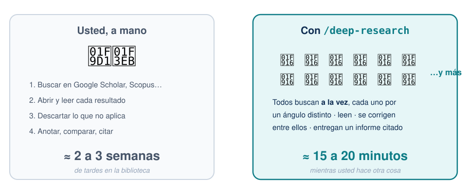
Una revisión que a un asistente le tomaría dos o tres semanas, un equipo de agentes en paralelo la entrega en lo que dura este bloque. No es magia: es que son muchos, a la vez — y mientras trabajan, ustedes siguen con lo suyo.
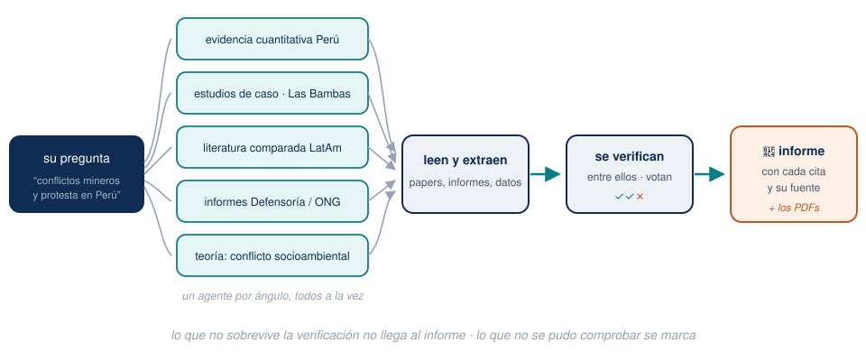
Su pregunta se repartió en cinco ángulos; cada agente busca por el suyo, leen y extraen, y se verifican entre ellos antes de escribir el informe. Es la estructura de un seminario de investigación, no la de un buscador.
Hay que distinguir dos números que suelen confundirse:
| Cuántos | Qué significa | |
|---|---|---|
| A la vez | hasta 16 | corriendo en paralelo en ese instante (menos si su computadora tiene pocos núcleos) |
| En total, a lo largo de la corrida | cientos | van entrando por fases: buscar → leer → verificar → sintetizar. El tope duro del sistema es 1 000 |
Y cuántos apunta a usar depende de la configuración (/config workflowSizeGuideline):
small menos de 5 · medium menos de 15 (por defecto) · large menos de 50
En una corrida real de este taller contamos cerca de 100 agentes en total: 6 al inicio, 26 leyendo, 75 verificando. Si pasa de 25, Claude Code avisa que es una corrida grande.
Un buscador les da enlaces. Este equipo les da afirmaciones ya contrastadas:
Tip
Empiecen a leer el informe por lo marcado como no verificado: ahí es donde su criterio de investigador hace la diferencia.
Ya debe haber terminado. Ábranlo… y antes de usar una sola cita, pídanle esto:
De la bibliografía que armaste, verifica cada referencia contra
Crossref: autores, año, título, volumen, páginas y DOI. Dime cuáles
tienen algún dato que no coincide y cuál es el correcto.
No me digas que está bien si no la pudiste comprobar.Qué observar: el informe ya venía con la fuente de cada afirmación — y la verificación igual encuentra cosas. Un DOI roto lo detecta cualquiera al primer clic; uno que abre el paper equivocado sobrevive a la revisión por pares.
La lección central del taller
Recordar y verificar son dos modos distintos de trabajo, y el segundo hay que pedirlo explícitamente. Todo lo que vaya a una publicación de ustedes pasa por el modo verificar.
| Tipo de fuente | ¿Lo consigue solo? |
|---|---|
| Working papers (NBER, SSRN, RePEc), preprints (arXiv) | ✅ Sí |
| Informes oficiales, tesis, repositorios institucionales | ✅ Sí |
| Artículos publicados en revistas de suscripción | ❌ No — llega al resumen, no al PDF |
| Libros | ❌ No — y en Ciencias Sociales muchas veces el libro es la fuente |
No es un defecto de la herramienta: es que esas puertas están cerradas para cualquiera que no esté logueado. Y ustedes sí lo están.
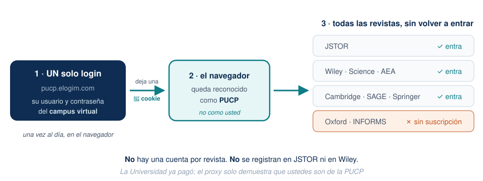
Un login — el del proxy de la biblioteca, con sus credenciales del campus virtual — y el navegador queda reconocido como PUCP: todas las revistas suscritas abren sin ingresar nada más. Ya lo hicieron al inicio de la clase; esa pestaña abierta es la llave.
/deep-research no usó esa sesión?Ustedes se loguearon al inicio de la clase… y aun así el informe dejó pendientes. No es un error:
Importante
Los agentes de /deep-research no navegan desde su computadora: buscan y leen desde los servidores de Anthropic. Por eso no ven la cookie de su navegador — para ellos, esas revistas siguen cerradas.
De ahí el reparto de tareas que ya conocen, ahora con nombre técnico:
| Quién | Qué hace | Con qué |
|---|---|---|
| Los agentes | Encuentran todo y bajan lo abierto; listan el resto | Búsqueda web, sin sesión |
| Su navegador | Descarga lo suscrito | La sesión PUCP que abrieron |
Por eso pendientes.md no es un consuelo: es el puente entre las dos mitades.
Claude no puede descargar de la biblioteca por ustedes — no tiene su sesión. Pero sí puede dejarles el trabajo servido:
Toma pendientes.md y arma una lista donde cada fuente tenga su enlace
de descarga ya armado con el proxy de la biblioteca, con este formato:
https://pucp.elogim.com/auth-meta/login.php?url=<enlace al artículo>
Ordénalas de más a menos citada y guárdala como descargar.md.Entonces ustedes: clic en cada enlace → descargar → todo a papers/. Con la sesión ya abierta, son segundos por artículo.
Y al terminar, se lo devuelven:
Ya descargué los PDFs a papers/. Renómbralos con el formato
apellido-año-tema.pdf, verifica que cada uno corresponda a su cita,
y actualiza pendientes.md con los que siguen faltando.Es el mismo principio de siempre, y conviene que quede grabado:
| Ustedes | Claude |
|---|---|
| Se loguean · hacen clic · descargan | Busca · arma los enlaces · organiza · renombra · verifica |
Por qué es así: Claude nunca escribe contraseñas por ustedes — regla de seguridad — y, trabajando con clave API, tampoco puede manejar su navegador.
¿Y no hay forma de que él haga hasta los clics?
La hay: la extensión Claude in Chrome le permite operar su navegador ya logueado — con ella, la descarga de pendientes.md sí sería automática. Pero requiere suscripción paga (Pro, $20/mes o más); no funciona con la clave API con la que trabajamos hoy.
Tip
Aun así el ahorro es enorme: la parte lenta no era hacer clic, era saber qué buscar, dónde está y si la cita es correcta.
Que la página cargue no significa que haya suscripción — hay que llegar hasta el PDF. Comprobado que no tenemos: Oxford ni Management Science/INFORMS (o sea, ni QJE ni ReStud por esta vía).
Casi siempre existe una versión abierta: NBER · SSRN · arXiv · RePEc, el repositorio del autor, o el enlace [PDF] a la derecha en Google Scholar.
Advertencia
El working paper no es el artículo publicado — hay casos con distinto título y hasta distintos autores. Para citar, la versión publicada; para leer, cualquiera — sabiendo cuál tienen.
Y para libros, que es lo que más pesa en varias de sus disciplinas: la búsqueda en el catálogo de la biblioteca sigue siendo insustituible. Esta herramienta complementa, no reemplaza.
No hay un parámetro de tiempo — pero sí tres palancas reales:
| Palanca | Cómo |
|---|---|
| Menos agentes | /config workflowSizeGuideline=small → apunta a menos de 5 agentes (por defecto son hasta 15) |
| Pregunta más estrecha | Un periodo, un país, un tipo de fuente. Una pregunta amplia abre más frentes y tarda más |
| Cortarlo a mano | /workflows → seleccionar la corrida → x detiene · p pausa y reanuda |
/workflows ven en vivo cuántos agentes hay, cuántos tokens llevan y el tiempo transcurrido.La estrategia práctica es la de hoy: lánzenlo y sigan trabajando. No es tiempo perdido si ustedes no lo están mirando.
cd).claude --resume./init + CLAUDE.md.Elijan una tarea real y pequeña de su propia investigación:
/init en la carpeta de un proyecto suyo y lean el CLAUDE.md que genera. Corrijan lo que no le gustó.Próxima sesión: el flujo completo de investigación — revisión de literatura automática con /deep-research, dashboards de datos, LaTeX sin escribir LaTeX, y cómo convertir sus clases grabadas en material de trabajo.
profesores/ del repositorio del cursoEstos slides fueron escritos, diagramados y compilados con Claude Code — incluyendo el análisis de las grabaciones de las clases piloto con los asistentes del Q-LAB.
Claude Code para investigación — Taller para docentes · PUCP 2026